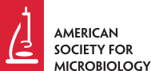
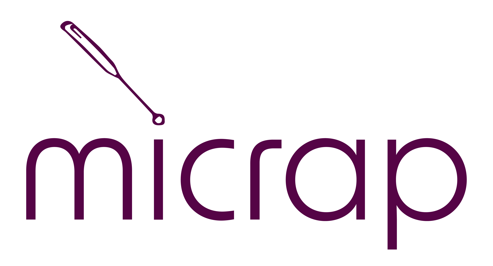

American Society for Microbiology
Agradecemos a la ASM por su respaldo académico y por contribuir al fortalecimiento de espacios de divulgación, formación e intercambio científico en microbiología.
Visitar sitio web


El 2° Encuentro de Microbiología — EMIC 2026 agradece el apoyo, acompañamiento y respaldo institucional de las entidades que hacen posible este espacio académico y científico.

Agradecemos a la ASM por su respaldo académico y por contribuir al fortalecimiento de espacios de divulgación, formación e intercambio científico en microbiología.
Visitar sitio web
Agradecemos a la Universidad Distrital por su apoyo institucional y por promover escenarios de investigación, participación estudiantil y apropiación del conocimiento científico.
Visitar sitio web
Agradecemos al Semillero de Microbiología Aplicada — MICRAP por su compromiso en la organización, logística, gestión académica y consolidación del EMIC 2026.
Visitar Instagram
Agradecemos a la Pontificia Universidad Javeriana por su apoyo al fortalecimiento de espacios académicos y científicos en torno a la microbiología.
Visitar sitio web
Agradecemos a la Universidad del Valle por su respaldo y participación en la consolidación de escenarios de intercambio académico y científico.
Visitar sitio web
Agradecemos a la Universidad Santiago de Cali por su apoyo al evento y por contribuir a la divulgación y formación científica.
Visitar sitio web
Agradecemos al Instituto de Biotecnología de la UNAM por su apoyo académico y científico en el marco del EMIC 2026.
Visitar sitio webAgradecemos a Inspire Biotech por su apoyo al evento y por sumarse a esta iniciativa de divulgación y encuentro científico.

Agradecemos a Entre Tubos Podcast por su apoyo en la difusión y comunicación de contenidos científicos relacionados con el evento.
Visitar podcast